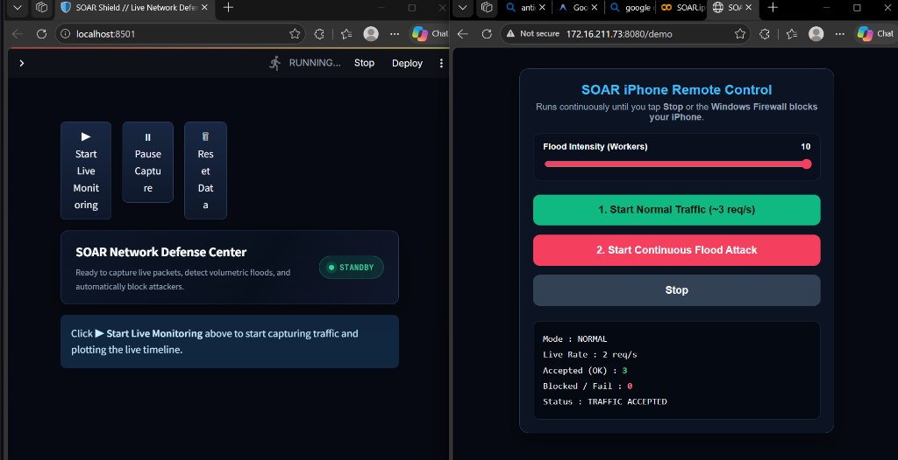
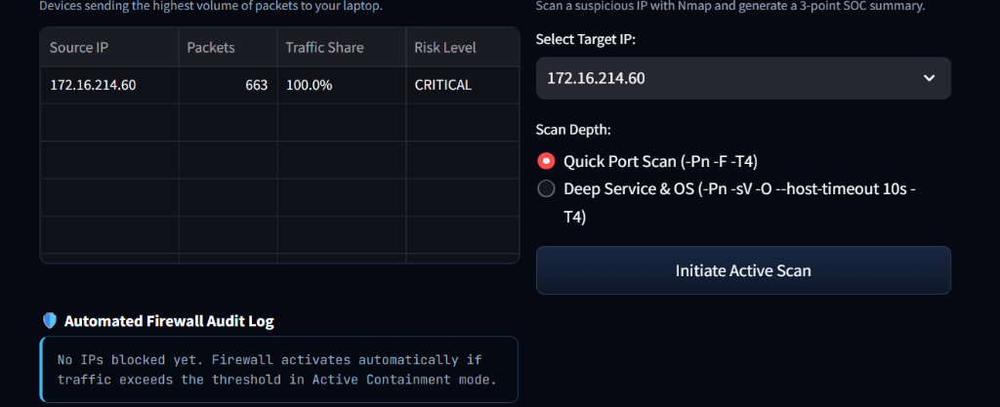

Real-Time Volumetric DDoS Telemetry, Automated Firewall Containment & AI-Assisted Incident Triage
Modern Security Operations Centers (SOCs) face severe alert fatigue caused by high-frequency network telemetry, volumetric Denial-of-Service (DoS/DDoS) bursts, and repetitive manual triage workflows. Traditional packet analyzers such as Wireshark excel at deep frame dissection, while firewalls enforce packet drops, and threat intelligence consoles summarize findings—yet analysts often switch manually between three or four disconnected tools before containing an active flood.
Security Orchestration, Automation, and Response (SOAR) platforms bridge this gap by unifying real-time packet ingestion, threshold-based anomaly detection, automated host/perimeter containment, active reconnaissance, and AI-assisted incident summarization inside a single automated feedback loop.
Lightweight educational and lab environments lack an integrated, cross-platform SOAR telemetry dashboard that can:
(i) capture live network traffic safely on consumer operating systems (Windows with Npcap and Linux) as well as
inspect offline .pcap/.pcapng captures, (ii) distinguish normal baseline traffic from
sustained volumetric floods without false positives on single-second bursts, (iii) automatically enforce real
operating-system firewall drop rules without locking out the host itself, and (iv) provide active port/service
reconnaissance paired with LLM-assisted triage summaries.
The project was structured around the following SMART engineering objectives:
.pcap/.pcapng forensic parsing.
netsh advfirewall) or Linux iptables, guarded by IP
validation and self-protection against blocking loopback or host IPs.
https://github.com/Shivam6901/soar-soc-dashboardSOAR.ipynb to a modular Python architecture).
| File / Artifact | Role in Architecture | Key Responsibilities |
|---|---|---|
streamlit_app.py |
Presentation & Orchestration | SOC Command Center UI, sidebar controls, sustained PPS detection, audit trail, frame inspector |
capture.py |
Packet Acquisition Layer | Thread-safe buffer (deque), Npcap interface discovery, port filtering, PCAP generator |
firewall.py |
Containment Engine | IP validation, self-IP guard, Windows netsh advfirewall & Linux iptables rules |
recon.py |
Recon & AI Triage | Nmap execution, 18-port Python TCP connect fallback, Gemini API auto-discovery & HTML-safe triage |
charts.py |
Visualization Engine | Local timezone conversion, multi-curve Plotly spline timeline, breach shading & block annotations |
target_server.py |
Target & Client Load UI | Multi-threaded HTTP/1.1 target on port 8080 serving the /demo Client Traffic Load Simulator |
attacker.py |
CLI Load Harness | Two-phase standalone Python load generator for two-laptop hotspot testing |
tests/test_soar.py |
Verification Suite | 8 automated unit and Streamlit AppTest integration test cases |
During the mid-semester phase, the system began as a monolithic Google Colab notebook coupled to Linux
iptables and ngrok. For end-semester deployment, the codebase was refactored into a
layered, modular Windows/Linux desktop architecture separating packet ingestion, detection analytics, firewall
enforcement, host reconnaissance, and UI rendering.
Incoming network traffic (from a remote mobile/laptop client or an uploaded forensic PCAP) enters the acquisition
layer, passes through port filtering (excluding Streamlit port 8501), and lands in a bounded,
lock-protected ring buffer. The analytics loop aggregates frames into 1-second buckets in local time, computes a
2-second rolling sustained rate, updates the Plotly incident timeline, and triggers automated firewall containment
whenever Active Containment is enabled.
AsyncSniffer, PcapReader, wrpcap) with Npcap driver on Windowsresample('1s'), rolling window aggregation, groupby analytics)netsh advfirewall), Linux iptables, Nmap / Python socket TCP fallbackgoogle-generativeai / Gemini Flash models) with heuristic fallbackcapture.py)
Scapy's AsyncSniffer invokes its callback from a background capture thread. Mutating
st.session_state from non-Streamlit threads causes session-context exceptions; therefore,
capture.py introduces a module-level collections.deque(maxlen=2500) protected by a
threading.Lock(). Live capture provides an AUTO_ALL multi-adapter mode (sniffing active
Wi-Fi and Loopback interfaces simultaneously), excludes Streamlit port 8501, and enforces the target
port filter (such as 8080) inside Python if an OS adapter rejects BPF filter syntax.
firewall.py)
Before modifying system firewall state, validate_blockable_ip() parses the candidate address with
Python's ipaddress library and rejects invalid strings, loopback (127.0.0.1),
unspecified/multicast addresses, and the host's own LAN IP addresses. On Windows,
enforce_firewall_drop() invokes netsh advfirewall firewall add rule with a unique prefix
SOAR_BLOCK_<ip> and profile=any; on Linux it appends an iptables -A INPUT
DROP rule. Cleanup via flush_soar_firewall_rules() deletes only rules prefixed with
SOAR_BLOCK_, leaving user and OS firewall rules intact.
recon.py)
The reconnaissance module locates nmap on PATH or standard Windows installation folders.
If Nmap is unavailable, _python_fallback_scan() performs concurrent TCP connect probes across 18
common service ports using a ThreadPoolExecutor. Outputs are escaped with html.escape()
before HTML terminal rendering and summarized into three actionable SOC bullet points via Gemini (with automatic
fallback to heuristic SOC triage when offline).
charts.py, streamlit_app.py)
charts.py converts Unix epoch timestamps to the host's local timezone and renders a multi-curve
Plotly spline figure combining Total Traffic (PPS), Top Source IP (PPS), and a 6-second Moving Baseline, overlaid
with shaded breach intervals, an Attack Started marker, a Peak PPS callout, and green Firewall Blocked event
lines. Adapter and host IP discovery helpers are cached via @st.cache_data(ttl=15) to ensure rapid
1-second UI refreshes.
target_server.py, attacker.py)
To allow safe, repeatable classroom demonstrations disconnected from campus Wi-Fi restrictions,
target_server.py hosts a threaded HTTP/1.1 target on port 8080 (with
request_queue_size = 128 and Connection: close) and serves the browser-based
Client Traffic Load Simulator at /demo. A standalone standard-library script
(attacker.py) is also provided for two-laptop hotspot testing.
unittest assertions validating IP guards, ring-buffer capacity, port filtering, benchmark PCAP generation, timezone alignment, Plotly trace/shape counts, and HTML escaping.streamlit.testing.v1.AppTest executing full dashboard renders under both standby and populated attack telemetry./demo load simulator and the Windows host running the SOAR dashboard and Windows Defender Firewall containment.| ID | Test Case | Input / Precondition | Expected Result | Status |
|---|---|---|---|---|
TC-01 |
IP Validation & Self-Host Guard | Inputs: 127.0.0.1, 0.0.0.0, invalid string, host IP, external 172.20.10.1 |
Rejects loopback, invalid, and host IPs; accepts external IPv4 | PASS |
TC-02 |
Buffer Cap & Port Filtering | _ALLOWED_PORT=8080; frames on ports 8501, 80, and 8080 |
Buffer maxlen is 2500; drops 8501/80 in live mode, keeps 8080 |
PASS |
TC-03 |
Multi-Adapter Discovery | Call list_capture_interfaces() on Windows host |
Returns AUTO_ALL as primary default adapter choice |
PASS |
TC-04 |
Benchmark PCAP Generation | Generate 50 normal + 150 burst packets via generate_benchmark_pcap |
Valid .pcap file > 1 KB written without Npcap admin lock |
PASS |
TC-05 |
Timeline Chart & Local TZ | 5s series peaking at 180 PPS with block event at t-1s |
Produces 4 Plotly traces, breach shapes, and local-time annotations | PASS |
TC-06 |
Recon Fallback & XSS Escaping | Run run_direct_nmap("127.0.0.1") & pass <script> to triage |
Returns TCP port report and escapes HTML tags cleanly | PASS |
TC-07 |
Client Load Simulator Config | Inspect target_server.ThreadedHTTPServer & DEMO_HTML |
request_queue_size=128; renders Client Traffic Load Simulator |
PASS |
TC-08 |
Streamlit Full UI Integration | Execute AppTest on standby and simulated attack buffer |
Zero exceptions; renders 4 KPI metrics and 2 data tables | PASS |
tests/test_soar.py)
Executing the automated suite (python tests/test_soar.py) verifies all eight unit and integration test
cases (TC-01 through TC-08) in 17.580s with zero failures:
test_tc01_firewall_ip_validation_and_self_guard ... ok test_tc02_capture_buffer_cap_and_port_filtering ... ok test_tc03_interface_discovery_auto_first ... ok test_tc04_benchmark_pcap_generation_and_readback ... ok test_tc05_timeline_chart_and_local_tz_markers ... ok test_tc06_recon_fallback_and_ai_summary ... ok test_tc07_client_load_simulator_html_and_backlog ... ok test_tc08_streamlit_dashboard_integration ... ok ---------------------------------------------------------------------- Ran 8 tests in 17.580s — OK


| Metric | Initial Prototype (Before Optimization) | Final Modular System (Achieved) |
|---|---|---|
| Maximum Packet Buffer Footprint | 15,000–20,000 rows (triggered Pandas MemoryError) |
2,500 rows bounded deque (0 memory errors) |
| UI Adapter/IP Discovery Overhead | Uncached per 1s rerun (~0.8–1.5s stall) | Cached via @st.cache_data(ttl=15) (< 50ms UI cycle) |
| TCP Accept Backlog on Target | Default listen(5) (dropped concurrent requests) |
request_queue_size = 128 (smooth burst intake) |
| Automated Test Suite Pass Rate | 0 automated tests (manual notebook cells only) | 8 / 8 automated tests passing (100% pass in 17.58s) |
| False Block on Normal Traffic | Single-second spike at 30 PPS caused early false block | 2s sustained window at 35 PPS keeps 1 req/s traffic green |
!apt-get, google.colab.userdata, and Linux-only iptables with cross-platform Windows Firewall (netsh advfirewall) and Npcap interface selection.MemoryError on Unfiltered Loopback Capture: Sniffing Streamlit's own port (8501) previously flooded the buffer to 15,000 rows. Solved by explicitly dropping port 8501, enforcing port filtering in Python, disabling heavy pkt.summary() calls in live mode, and capping the ring buffer at 2,500 frames.pd.to_datetime(..., unit='s') defaulted to UTC while packet table strings used local IST, causing a 5.5-hour mismatch with firewall event markers. Unified both via to_local_naive_dt().The SOAR Network Defense Center evolved from an experimental Google Colab notebook into a modular, verified desktop SOC platform capable of real-time network telemetry, forensic PCAP inspection, automated host-level firewall containment, active reconnaissance, and AI-assisted triage. Every core subsystem was refactored into dedicated modules and validated using an automated 8-case test suite alongside live multi-device evaluation.
deque eliminated background thread errors.8501) and guarding against self-IP blocking are mandatory safeguards in live-sniffing SOAR tools.Building and hardening this system demonstrated that effective security automation depends equally on accurate telemetry math, defensive OS-level guardrails, and resilient software engineering practices such as modularity, bounded memory management, and automated regression testing.
This chapter documents chronological engineering milestones, defects uncovered during integration, and concrete code improvements completed by both team members across the semester.
| Date | Contributor | Module / Focus | Code Errors / Issues Faced | Improvements Implemented |
|---|---|---|---|---|
| Aug–Sep 2026 (Mid-Term) | Shivam Batra & Emaan Dhillon | SOAR.ipynb Prototype |
Notebook depended on Colab userdata, ngrok, and hardcoded eth0; no dataset available. |
Built synthetic generate_benchmark_pcap(), initial Streamlit dark SOC UI, Nmap + Gemini triage integration. |
| Nov 2026 (Phase 2A) | Shivam Batra | Modular Refactor (firewall.py, capture.py) |
Colab Linux iptables failed on Windows; Scapy callback mutated st.session_state from worker thread. |
Migrated to modular Windows/Linux architecture; added netsh advfirewall blocking, IP self-guard, and lock-protected deque. |
| Nov 2026 (Phase 2B) | Emaan Dhillon | target_server.py, attacker.py |
Unable to run live flood over campus Wi-Fi; Python default listen(5) dropped bursts; 900ms JS timeout caused false block text. |
Created isolated hotspot test harness + browser /demo load simulator; increased request_queue_size=128 and fixed consecutive-fail threshold. |
| Nov 2026 (Phase 2C) | Shivam Batra | charts.py, streamlit_app.py |
UTC-vs-IST 5.5h chart offset; UI stalled on every 1s refresh; cumulative packet count marked normal nodes CRITICAL. |
Added to_local_naive_dt(), multi-curve spline timeline with block markers, @st.cache_data caching, and sustained PPS attribution. |
| Nov 2026 (Phase 2D) | Emaan Dhillon & Shivam Batra | capture.py, recon.py, tests/test_soar.py |
Unfiltered Loopback captured port 8501 causing Pandas MemoryError; missing Nmap binary blocked recon testing; L2 MAC resolution error in non-admin PCAP generation. |
Hard-blocked port 8501, capped buffer at 2,500 rows, added 18-port TCP fallback in recon.py, fixed explicit MACs in generate_benchmark_pcap(), and verified 8/8 automated tests. |
firewall.py), thread-safe packet capture & memory bounding (capture.py), multi-curve Plotly incident timeline (charts.py), SOC dashboard optimization (streamlit_app.py), and GitHub repository setup.target_server.py), two-laptop hotspot CLI harness (attacker.py), active reconnaissance fallback & Gemini AI triage integration (recon.py), automated test suite (tests/test_soar.py), UML design diagrams, and final report documentation.[Bio24] Philippe Biondi and the Scapy Community. Scapy: Interactive Packet Manipulation Program & Library. 2024. URL: https://scapy.net/
[Str24] Streamlit Inc. Streamlit Documentation: Build and Share Data Apps in Python. 2024. URL: https://docs.streamlit.io/
[Plo24] Plotly Technologies Inc. Plotly Python Open Source Graphing Library. 2024. URL: https://plotly.com/python/
[Npc24] Nmap Project. Npcap: Windows Packet Capture Library and Driver & Nmap Reference Guide. 2024. URL: https://nmap.org/
[Goo25] Google AI. Gemini API Developer Documentation. 2025. URL: https://ai.google.dev/
[CIC19] Iman Sharafaldin, Arash Habibi Lashkari, Saqib Hakak, and Ali A. Ghorbani. “Developing Realistic Distributed Denial of Service (DDoS) Attack Dataset and Taxonomy.” IEEE International Carnahan Conference on Security Technology (ICCST), 2019.